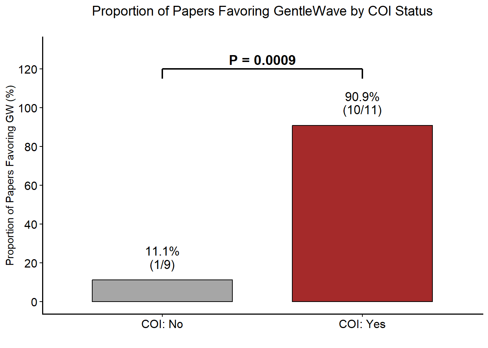
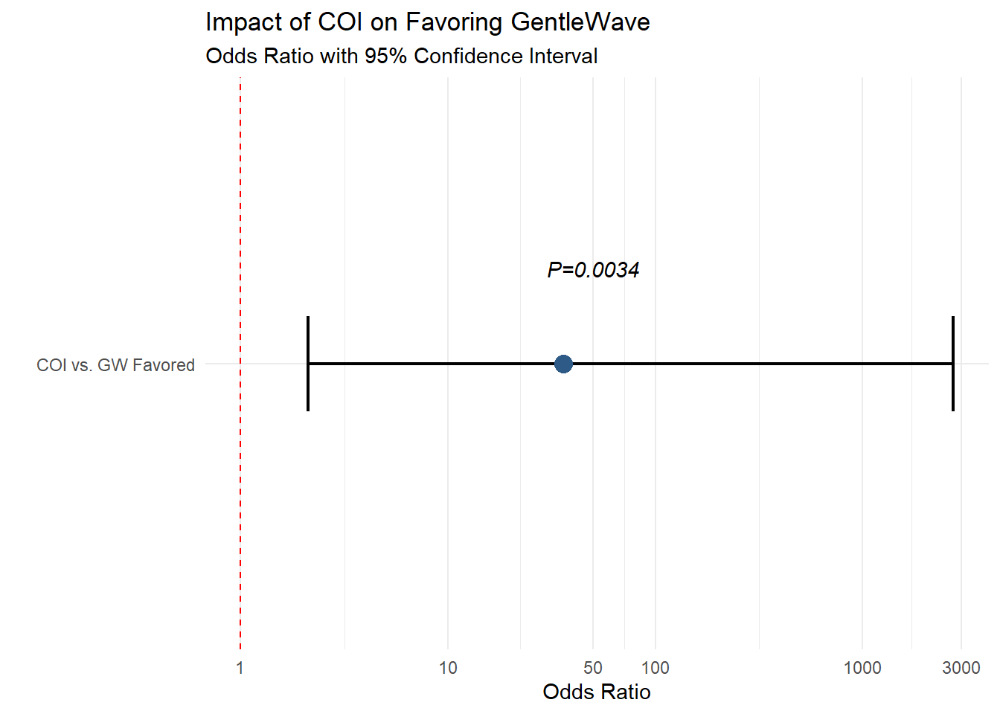
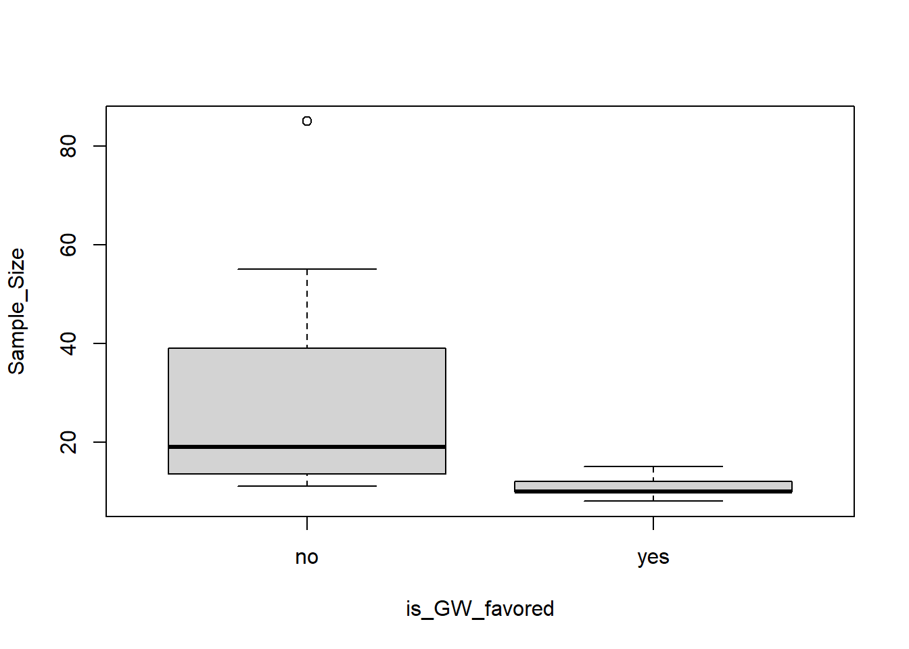
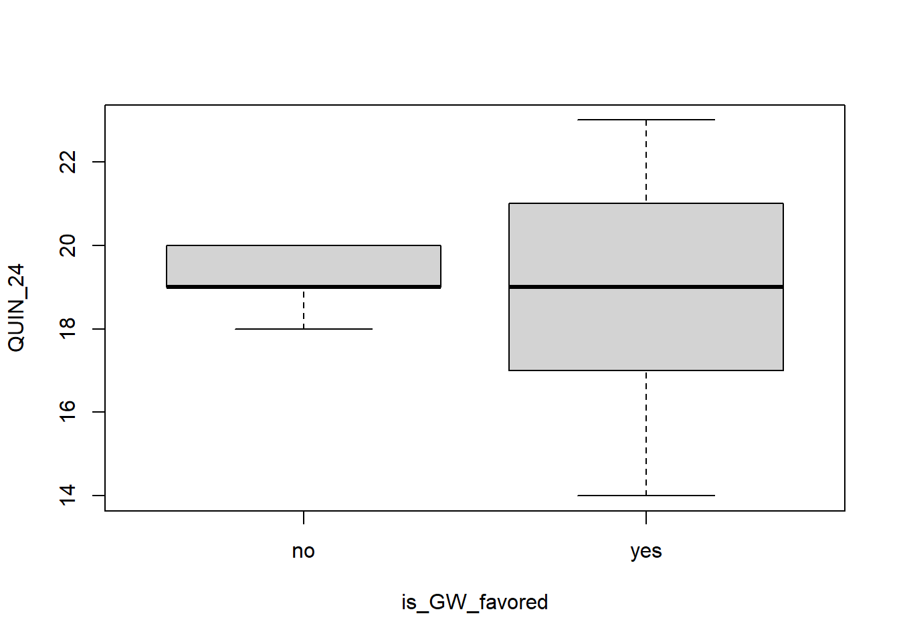

Last updated: 2026-09-22
Checks: 6 1
Knit directory: Collaborations/
This reproducible R Markdown analysis was created with workflowr (version 1.7.1). The Checks tab describes the reproducibility checks that were applied when the results were created. The Past versions tab lists the development history.
The R Markdown file has unstaged changes. To know which version of
the R Markdown file created these results, you’ll want to first commit
it to the Git repo. If you’re still working on the analysis, you can
ignore this warning. When you’re finished, you can run
wflow_publish to commit the R Markdown file and build the
HTML.
Great job! The global environment was empty. Objects defined in the global environment can affect the analysis in your R Markdown file in unknown ways. For reproduciblity it’s best to always run the code in an empty environment.
The command set.seed(20210523) was run prior to running
the code in the R Markdown file. Setting a seed ensures that any results
that rely on randomness, e.g. subsampling or permutations, are
reproducible.
Great job! Recording the operating system, R version, and package versions is critical for reproducibility.
Nice! There were no cached chunks for this analysis, so you can be confident that you successfully produced the results during this run.
Great job! Using relative paths to the files within your workflowr project makes it easier to run your code on other machines.
Great! You are using Git for version control. Tracking code development and connecting the code version to the results is critical for reproducibility.
The results in this page were generated with repository version 94d3540. See the Past versions tab to see a history of the changes made to the R Markdown and HTML files.
Note that you need to be careful to ensure that all relevant files for
the analysis have been committed to Git prior to generating the results
(you can use wflow_publish or
wflow_git_commit). workflowr only checks the R Markdown
file, but you know if there are other scripts or data files that it
depends on. Below is the status of the Git repository when the results
were generated:
Ignored files:
Ignored: .Rhistory
Ignored: analysis/.Rhistory
Ignored: analysis/2022_Mar2_Marinho_cache/
Unstaged changes:
Modified: analysis/2026_0302_Sanabil.Rmd
Note that any generated files, e.g. HTML, png, CSS, etc., are not included in this status report because it is ok for generated content to have uncommitted changes.
These are the previous versions of the repository in which changes were
made to the R Markdown (analysis/2026_0302_Sanabil.Rmd) and
HTML (docs/2026_0302_Sanabil.html) files. If you’ve
configured a remote Git repository (see ?wflow_git_remote),
click on the hyperlinks in the table below to view the files as they
were in that past version.
| File | Version | Author | Date | Message |
|---|---|---|---|---|
| Rmd | 6b03305 | han | 2026-09-18 | 9/18/2026 |
| html | 6b03305 | han | 2026-09-18 | 9/18/2026 |
| Rmd | dee899d | han | 2026-09-11 | 9/11/2026 |
| html | dee899d | han | 2026-09-11 | 9/11/2026 |
| Rmd | 7d240ae | han | 2026-09-10 | 9/10/2026 |
| html | 7d240ae | han | 2026-09-10 | 9/10/2026 |
| Rmd | 973b6ca | han | 2026-09-01 | 9/1/2026 |
| Rmd | 08d61d2 | han | 2026-04-09 | 4/9/2026 |
| html | 08d61d2 | han | 2026-04-09 | 4/9/2026 |
| Rmd | 451e081 | han | 2026-04-09 | 4/9/2026 |
| html | 451e081 | han | 2026-04-09 | 4/9/2026 |
| Rmd | ec8183c | han | 2026-04-08 | 4/8/2026 |
| html | ec8183c | han | 2026-04-08 | 4/8/2026 |
| Rmd | e9a75a6 | han | 2026-03-24 | 3/24/2026 |
| html | e9a75a6 | han | 2026-03-24 | 3/24/2026 |
| Rmd | b95fee9 | han | 2026-03-11 | 3/11/2026 |
| html | b95fee9 | han | 2026-03-11 | 3/11/2026 |
#data=as_tibble(read.csv((file.path(root, "..\\2026\\202603\\Sanabil\\Sonendo research - completed version part 3-2.csv")), header = T))
data=as_tibble(read.csv((file.path(root, "..\\2026\\202603\\Sanabil\\analysis_data_20260902.csv")), header = T)) %>% select("Author...Year", "is.GW.favored", "COI")
data%>%
datatable(extensions = 'Buttons',
caption = "",
options = list(dom = 'Blfrtip',
buttons = c('copy', 'csv', 'excel', 'pdf', 'print'),
lengthMenu = list(c(10,25,50,-1),
c(10,25,50,"All"))))data=as_tibble(data[complete.cases(data), ]) library(dplyr)
# 1. Clean the data: remove empty rows and filter for 'yes/no'
analysis_data <- data %>%
filter(is.GW.favored %in% c("yes", "no") & COI %in% c("yes", "no")) %>%
mutate(
is.GW.favored = factor(is.GW.favored, levels = c("no", "yes")),
COI = factor(COI, levels = c("no", "yes"))
)
analysis_data%>%
datatable(extensions = 'Buttons',
caption = "",
options = list(dom = 'Blfrtip',
buttons = c('copy', 'csv', 'excel', 'pdf', 'print'),
lengthMenu = list(c(10,25,50,-1),
c(10,25,50,"All"))))#write.csv(analysis_data, file=file.path(root, "..\\2026\\202603\\Sanabil\\analysis_data.csv"))# 2. Create the Contingency Table
tab <- table(analysis_data$COI, analysis_data$is.GW.favored)
print("Contingency Table (Rows = COI, Cols = Favored):")[1] "Contingency Table (Rows = COI, Cols = Favored):"print(tab)
no yes
no 7 1
yes 1 8fisher.test(tab)
Fisher's Exact Test for Count Data
data: tab
p-value = 0.003373
alternative hypothesis: true odds ratio is not equal to 1
95 percent confidence interval:
2.109578 2740.743037
sample estimates:
odds ratio
35.89094 # 3. Calculate Odds Ratio and Confidence Intervals
# Method A: Using a simple Fisher Test (Recommended for small dental datasets)
fisher_results <- fisher.test(tab)
# 4. Display Results
cat("\n--- Statistical Results ---\n")
--- Statistical Results ---cat("Odds Ratio:", round(fisher_results$estimate, 3), "\n")Odds Ratio: 35.891 cat("95% CI:", round(fisher_results$conf.int[1], 3), "to", round(fisher_results$conf.int[2], 3), "\n")95% CI: 2.11 to 2740.743 cat("P-value:", format.pval(fisher_results$p.value), "\n")P-value: 0.0033731 library(ggplot2)
library(dplyr)
# 1. Prepare the data based on your contingency table
# No COI: 1/9 (11.1%) | COI Present: 10/11 (90.9%)
plot_data <- data.frame(
COI_Status = factor(c("COI: No", "COI: Yes"), levels = c("COI: No", "COI: Yes")),
Favored = c(1, 8),
Total = c(8, 9)
) %>%
mutate(Proportion = (Favored / Total) * 100)
# 2. Generate the plot
p1=ggplot(plot_data, aes(x = COI_Status, y = Proportion, fill = COI_Status)) +
# Draw bars with black outlines
geom_bar(stat = "identity", color = "black", width = 0.7, size = 0.7) +
# Add labels above bars: Percentage and Fraction (n/N)
geom_text(aes(label = paste0(round(Proportion, 1), "%\n(", Favored, "/", Total, ")")),
vjust = -0.5, size = 4.5, fontface = "plain", lineheight = 0.9) +
# Set colors to match the image (Grey and Dark Red)
scale_fill_manual(values = c("COI: No" = "#A6A6A6", "COI: Yes" = "#A52A2A")) +
# Scale Y-axis and set limits to make room for the bracket
scale_y_continuous(limits = c(0, 130), breaks = seq(0, 130, 20)) +
# MOVED BRACKET UP: Starting the bracket at y = 115
annotate("segment", x = 1, xend = 2, y = 120, yend = 120, size = 0.8) + # Horizontal line
annotate("segment", x = 1, xend = 1, y = 115, yend = 120, size = 0.8) + # Left tick
annotate("segment", x = 2, xend = 2, y = 115, yend = 120, size = 0.8) + # Right tick
# MOVED P-VALUE UP: Placing text at y = 125
annotate("text", x = 1.5, y = 125, label = "P = 0.0034", size = 5, fontface = "bold") +
# Labels and Title
labs(
title = "Proportion of Papers Favoring GentleWave by COI Status",
x = "",
y = "Proportion of Papers Favoring GW (%)"
) +
# Use a clean theme that matches the image style
theme_classic() +
theme(
legend.position = "none",
plot.title = element_text(hjust = 0.5, size = 14, margin = margin(b = 20)),
axis.title.y = element_text(size = 11),
axis.text = element_text(size = 12, color = "black"),
axis.line = element_line(size = 0.6)
)
p1
#ggsave(file.path(root, "..\\2026\\202603\\Sanabil\\proportion.png"),
# plot = p1, width = 8, height = 4, dpi = 300)library(ggplot2)
# 1. Create a data frame for the plot
or_results <- data.frame(
Group = "COI vs. GW Favored",
OR = 35.89,
Lower = 2.11,
Upper = 2740.74,
Pval = "P = 0.0034"
)
# 2. Plot using a Logarithmic Scale
p2=ggplot(or_results, aes(x = Group, y = OR)) +
# Draw the 'No Effect' line at 1.0
geom_hline(yintercept = 1, linetype = "dashed", color = "red") +
# Draw the Confidence Interval
geom_errorbar(aes(ymin = Lower, ymax = Upper), width = 0.2, size = 0.8) +
# Draw the OR point
geom_point(size = 4, color = "#2E5A88") +
# Use Log10 Scale to handle the 3000+ upper bound
scale_y_log10(breaks = c(0.1, 1, 10, 50, 100, 1000, 3000)) +
coord_flip() + # Flip to make it look like a classic forest plot
labs(
title = "Impact of COI on Favoring GentleWave",
subtitle = "Odds Ratio with 95% Confidence Interval",
x = "",
y = "Odds Ratio"
) +
# Add the P-value as a text label
annotate("text", x = 1.2, y = 50, label = "P=0.0034", fontface = "italic") +
theme_minimal()
p2
#ggsave(file.path(root, "..\\2026\\202603\\Sanabil\\odds_ratio.png"),
# plot = p2, width = 8, height = 4, dpi = 300)The odds of favoring GW is 35 times higher in COI yes than COI No.
The proportion of papers with COI favoring GW is significantly higher than papers with No COI (p=0.0034), and the odds of favoring GW is 35 times higher in papers with COI than without.
analysis_data_update=read.csv(file.path(root, "..\\2026\\202603\\Sanabil\\analysis_data_20260902.csv")) %>% select(is.GW.favored, COI, Sample.Size, QUIN...24)
library(tidyverse)
# 1. Clean and prepare the dataset
analysis_data_clean <- analysis_data_update %>%
# Handle column name formatting and missing values
rename(
is_GW_favored = is.GW.favored,
Sample_Size = Sample.Size,
QUIN_24 = QUIN...24
) %>%
# Drop rows with NA values (e.g., Row 12)
drop_na(is_GW_favored) %>%
mutate(
# Convert binary outcome to factor (ensure "no" is reference: 0 = no, 1 = yes)
is_GW_favored = factor(is_GW_favored, levels = c("no", "yes")),
# Convert categorical covariate COI to factor
COI = factor(COI, levels = c("no", "yes")),
# Ensure numeric types for continuous predictors
Sample_Size = as.numeric(Sample_Size),
QUIN_24 = as.numeric(QUIN_24)
) %>%
drop_na(is_GW_favored)
# 2. Fit the Binary Logistic Regression Model
logit_model <- glm(
is_GW_favored ~ COI + Sample_Size + QUIN_24,
data = analysis_data_clean,
family = binomial(link = "logit")
)
# 3. View model summary (coefficients and p-values)
summary(logit_model)
Call:
glm(formula = is_GW_favored ~ COI + Sample_Size + QUIN_24, family = binomial(link = "logit"),
data = analysis_data_clean)
Coefficients:
Estimate Std. Error z value Pr(>|z|)
(Intercept) -1277.0 560144.7 -0.002 0.998
COIyes 670.0 290173.3 0.002 0.998
Sample_Size -109.5 47489.5 -0.002 0.998
QUIN_24 123.1 53499.4 0.002 0.998
(Dispersion parameter for binomial family taken to be 1)
Null deviance: 1.7323e+01 on 12 degrees of freedom
Residual deviance: 9.3829e-09 on 9 degrees of freedom
(4 observations deleted due to missingness)
AIC: 8
Number of Fisher Scoring iterations: 25# 4. Calculate Odds Ratios (OR) and 95% Confidence Intervals
odds_ratios <- exp(cbind(OR = coef(logit_model), confint(logit_model)))
print(odds_ratios) OR 2.5 % 97.5 %
(Intercept) 0.000000e+00 0 Inf
COIyes 9.582106e+290 0 Inf
Sample_Size 2.688393e-48 0 Inf
QUIN_24 2.848509e+53 0 Inftable(analysis_data_clean$COI, analysis_data_clean$is_GW_favored)
no yes
no 7 1
yes 1 8boxplot(Sample_Size ~ is_GW_favored, data = analysis_data_clean)
| Version | Author | Date |
|---|---|---|
| 7d240ae | han | 2026-09-10 |
boxplot(QUIN_24 ~ is_GW_favored, data = analysis_data_clean)
| Version | Author | Date |
|---|---|---|
| 7d240ae | han | 2026-09-10 |
library(logistf)
# Fit Firth's penalized logistic regression
firth_model <- logistf(
is_GW_favored ~ COI + Sample_Size + QUIN_24,
data = analysis_data_clean
)
# View model summary (coefficients and profile likelihood p-values)
summary(firth_model)logistf(formula = is_GW_favored ~ COI + Sample_Size + QUIN_24,
data = analysis_data_clean)
Model fitted by Penalized ML
Coefficients:
coef se(coef) lower 0.95 upper 0.95 Chisq p
(Intercept) -4.6137510 6.3235190 -54.6137510 9.4701262 0.4075172 0.52323236
COIyes 3.1983695 1.9205947 -0.1253452 28.8036197 3.4800271 0.06211372
Sample_Size -0.5306543 0.3920774 -4.5399947 0.1567208 1.5303570 0.21605887
QUIN_24 0.5115434 0.4164071 -0.3117543 5.3033633 1.1893040 0.27546999
method
(Intercept) 2
COIyes 2
Sample_Size 2
QUIN_24 2
Method: 1-Wald, 2-Profile penalized log-likelihood, 3-None
Likelihood ratio test=6.706004 on 3 df, p=0.08188283, n=13
Wald test = 3.450042 on 3 df, p = 0.3272995# Extract Odds Ratios and 95% Profile Likelihood Confidence Intervals
firth_OR <- exp(cbind(
OR = coef(firth_model),
confint(firth_model)
))
print(firth_OR) OR Lower 95% Upper 95%
(Intercept) 0.009914559 1.912271e-24 1.296652e+04
COIyes 24.492562552 8.821924e-01 3.230376e+12
Sample_Size 0.588219969 1.067346e-02 1.169669e+00
QUIN_24 1.667863336 7.321614e-01 2.010117e+02library(logistf)
# Fit Firth's penalized logistic regression
firth_model <- logistf(
is_GW_favored ~ COI + QUIN_24,
data = analysis_data_clean
)
# View model summary (coefficients and profile likelihood p-values)
summary(firth_model)logistf(formula = is_GW_favored ~ COI + QUIN_24, data = analysis_data_clean)
Model fitted by Penalized ML
Coefficients:
coef se(coef) lower 0.95 upper 0.95 Chisq p
(Intercept) -6.0008181 5.9547574 -20.3972954 6.3453011 0.9608637 0.32696936
COIyes 3.0895116 1.5239631 0.4648240 7.2611393 5.5385000 0.01860252
QUIN_24 0.2449877 0.2878664 -0.3675052 0.9269513 0.6725986 0.41214710
method
(Intercept) 2
COIyes 2
QUIN_24 2
Method: 1-Wald, 2-Profile penalized log-likelihood, 3-None
Likelihood ratio test=5.584983 on 2 df, p=0.06126837, n=13
Wald test = 4.462289 on 2 df, p = 0.1074054# Extract Odds Ratios and 95% Profile Likelihood Confidence Intervals
firth_OR <- exp(cbind(
OR = coef(firth_model),
confint(firth_model)
))
print(firth_OR) OR Lower 95% Upper 95%
(Intercept) 0.002476725 1.385374e-09 569.808920
COIyes 21.966347686 1.591734e+00 1423.877818
QUIN_24 1.277605634 6.924597e-01 2.526794
sessionInfo()R version 4.3.2 (2023-10-31 ucrt)
Platform: x86_64-w64-mingw32/x64 (64-bit)
Running under: Windows 11 x64 (build 26200)
Matrix products: default
locale:
[1] LC_COLLATE=English_United States.utf8
[2] LC_CTYPE=English_United States.utf8
[3] LC_MONETARY=English_United States.utf8
[4] LC_NUMERIC=C
[5] LC_TIME=English_United States.utf8
time zone: America/Chicago
tzcode source: internal
attached base packages:
[1] grid stats graphics grDevices utils datasets methods
[8] base
other attached packages:
[1] logistf_1.26.1 VennDiagram_1.7.3 futile.logger_1.4.3
[4] condsurv_1.0.0 devtools_2.4.5 usethis_3.1.0
[7] tidycmprsk_1.1.0 gtsummary_2.0.4 ggsurvfit_1.1.0
[10] irr_0.84.1 lpSolve_5.6.23 readxl_1.4.3
[13] cowplot_1.1.3 matrixStats_1.5.0 gridExtra_2.3
[16] DT_0.33 rstatix_0.7.2 ggpubr_0.6.0
[19] kableExtra_1.4.0 lubridate_1.9.4 forcats_1.0.0
[22] stringr_1.5.1 dplyr_1.1.4 purrr_1.0.2
[25] readr_2.1.4 tidyr_1.3.1 tibble_3.2.1
[28] ggplot2_4.0.3 tidyverse_2.0.0 rprojroot_2.0.4
loaded via a namespace (and not attached):
[1] RColorBrewer_1.1-3 rstudioapi_0.17.1 jsonlite_1.8.9
[4] shape_1.4.6.1 magrittr_2.0.3 estimability_1.5.1
[7] jomo_2.7-6 farver_2.1.2 nloptr_2.0.3
[10] rmarkdown_2.29 fs_1.6.5 vctrs_0.6.5
[13] memoise_2.0.1 minqa_1.2.6 htmltools_0.5.8.1
[16] lambda.r_1.2.4 broom_1.0.7 cellranger_1.1.0
[19] Formula_1.2-5 mitml_0.4-5 sass_0.4.9
[22] bslib_0.9.0 htmlwidgets_1.6.4 emmeans_1.10.7
[25] futile.options_1.0.1 cachem_1.1.0 whisker_0.4.1
[28] mime_0.12 lifecycle_1.0.4 iterators_1.0.14
[31] pkgconfig_2.0.3 Matrix_1.6-5 R6_2.6.1
[34] fastmap_1.2.0 rbibutils_2.3 shiny_1.10.0
[37] digest_0.6.33 pkgload_1.4.0 crosstalk_1.2.1
[40] timechange_0.3.0 abind_1.4-8 mgcv_1.9-0
[43] compiler_4.3.2 remotes_2.5.0 withr_3.0.2
[46] S7_0.2.0 backports_1.5.0 carData_3.0-5
[49] pkgbuild_1.4.6 pan_1.9 ggsignif_0.6.4
[52] MASS_7.3-60 sessioninfo_1.2.2 tools_4.3.2
[55] httpuv_1.6.15 nnet_7.3-19 glue_1.8.0
[58] nlme_3.1-163 promises_1.3.2 generics_0.1.3
[61] operator.tools_1.6.3.1 gtable_0.3.6 tzdb_0.4.0
[64] formula.tools_1.7.1 hms_1.1.3 xml2_1.3.6
[67] car_3.1-3 foreach_1.5.2 pillar_1.10.1
[70] later_1.4.1 splines_4.3.2 lattice_0.21-9
[73] survival_3.8-3 tidyselect_1.2.1 miniUI_0.1.1.1
[76] knitr_1.49 git2r_0.35.0 reformulas_0.4.0
[79] svglite_2.1.3 xfun_0.50.6 stringi_1.8.3
[82] workflowr_1.7.1 yaml_2.3.8 boot_1.3-28.1
[85] evaluate_1.0.3 codetools_0.2-19 cli_3.6.2
[88] rpart_4.1.21 xtable_1.8-4 systemfonts_1.2.1
[91] Rdpack_2.6.2 jquerylib_0.1.4 Rcpp_1.0.11
[94] coda_0.19-4.1 ellipsis_0.3.2 profvis_0.4.0
[97] urlchecker_1.0.1 lme4_1.1-38 glmnet_5.0
[100] mvtnorm_1.3-3 viridisLite_0.4.2 scales_1.4.0
[103] rlang_1.1.2 formatR_1.14 mice_3.19.0